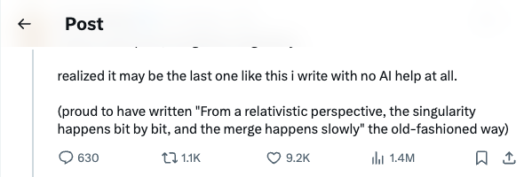

Twitter
sama_sama_On 'Gentle Singularity' and the End of AI-Free Writing
Published: 2025-06-10T21:15:43.000Z

Sam Altman released a new post titled "the gentle singularity," remarking that it might be the last piece he writes entirely without AI assistance. He highlighted the perspective that "From a relativistic perspective, the singularity happens bit by bit, and the merge happens slowly," suggesting a future where creative work is deeply integrated with AI. This tweet signifies the advent of a new era of human-AI collaboration.
OpenAI_OpenAI_o3-pro Fully Rolls Out to Pro Users
Published: 2025-06-10T20:08:49.000Z

OpenAI has announced that its latest model, o3-pro, is now fully rolling out to all ChatGPT Pro users and API developers. This update aims to enhance user experience and development efficiency, further expanding AI application scenarios. The launch of o3-pro is expected to bring more powerful features and stable services to professional users, solidifying OpenAI's leading position in the AI field.
sama_sama_OpenAI Open-Weights Model Release Delayed
Published: 2025-06-10T22:58:58.000Z

Sam Altman announced a delay in the release of OpenAI's "open-weights model." Originally anticipated for June, the model is now expected to be launched later this summer. Altman stated that the postponement is due to an "unexpected and quite amazing" discovery by their research team, which necessitates additional development time to ensure its full potential is realized. This suggests a significant breakthrough in OpenAI's open-source initiatives, building anticipation for its eventual release and indicating a potentially groundbreaking development in the field.
sarahookr_MLStreetTalk Exposes LM Arena Ranking Overfitting
Published: 2025-06-10T09:49:07.000Z
Sara Hooker recommends an excellent MLStreetTalk video that exposes how a handful of providers have systematically overfit to the LM Arena evaluation benchmarks, easily distorting the rankings. The 26-minute video details this issue. Hooker urges scientists and the community to strive for better industry standards and demand more fair and transparent evaluation mechanisms.
mahbub_bello_AISheets: Open-Source LLM-Powered AI Spreadsheet App Released
Published: 2025-06-10T15:32:50.000Z
Twitter user mahbub_bello retweeted Thomas Wolf's announcement of AISheets. AISheets is described as their most fun AI experiment to date, integrating thousands of AI models with spreadsheets. It allows users to build, analyze, and automate data using open-source large language models within a slick, fast, and simple application. The app is highlighted as "surprisingly powerful," aiming to revolutionize data handling.
Google_Gemini 2.5 Pro Generates Interactive Fractal Art
Published: 2025-06-10T20:30:59.000Z
Google has showcased the impressive artistic creation capabilities of its advanced Gemini 2.5 Pro model. Users can now instantly generate interactive fractal art by simply providing text prompts, such as the example: "Make me a beautiful particle based, animated, endless, 3D, symmetrical, fractal art piece inspired by a math formula." This demonstration highlights Gemini 2.5 Pro's significant potential in the field of generative AI and multimodal content creation, effectively transforming complex mathematical aesthetics into captivating visual art forms.
wechat
CAS Pioneers '1-bit VLA Model': 70%+ Memory Reduction, Performance Comparable to 4-bit OpenVLA, Enabling VLA on Low-Cost Devices
Published: 2025-06-10T23:45:43.000Z

The Chinese Academy of Sciences (CAS) team has pioneered the "1-bit VLA Model" (BitVLA), marking the first 1-bit Vision-Language-Action model specifically designed for robot manipulation. This innovative model utilizes ternary parameters of {-1, 0, 1} for its core architecture. Through a novel distillation-aware training strategy, BitVLA effectively compresses its visual encoder to just 1.58-bit weights, leading to a remarkable memory reduction of over 70%. Despite this significant compression, the model maintains performance comparable to state-of-the-art 4-bit OpenVLA on the challenging LIBERO benchmark. BitVLA's key advantage is its exceptionally low memory footprint, which enables efficient execution of complex VLA tasks even on low-cost, resource-constrained edge devices. This breakthrough demonstrates immense potential for deploying advanced robotic AI in a wider range of practical applications, making intelligent robotics more accessible and scalable.
A 20-Person Team Preemptively Realizes DeepSeek's Vision: A Paradigm Shift in AI Computing Power and Addressing Large Model Compute Cost Challenges
Published: 2025-06-10T16:06:12.000Z

Addressing the current computing power bottlenecks in large AI models, this article discusses the limitations of traditional GPGPU architectures and DeepSeek's vision for AI hardware development. It primarily introduces YuPan AI's SRDA system-level dataflow computing architecture, which aims to resolve core hardware pain points such as memory capacity/bandwidth, computational precision, cluster expansion, and PCIe bus contention. SRDA's innovative design, featuring dataflow-driven principles, system-level interconnection, 3D-stacked high-bandwidth memory, streamlined efficiency, and software-defined reconfigurability, is expected to significantly enhance the performance of large model training and inference, reduce costs, and improve stability. The article suggests that SRDA's philosophy aligns with DeepSeek's cutting-edge research, potentially signaling a new paradigm for AI-specific computing architectures. Especially as large model technical requirements converge, SRDA could become a watershed moment, distinguishing between general-purpose GPGPUs and truly AI-dedicated architectures.
VILA-U: A Unified Foundation Model Integrating Visual Understanding and Generation
Published: 2025-06-10T16:06:12.000Z

VILA-U introduces an innovative unified foundation model designed to integrate visual understanding and generation tasks, encompassing image-text understanding, video-text understanding, image generation, and video generation. Central to this model is its "Unified Foundation Vision Tower," which functions as an image tokenizer. This tower is trained using a combination of image reconstruction loss and image-text contrastive loss, enabling it to excel in both generative and discriminative capabilities. VILA-U adopts a unified Next-Token Prediction training paradigm, eliminating reliance on external diffusion models and establishing an end-to-end autoregressive framework. Experimental results demonstrate VILA-U's competitive performance across visual-language understanding and generation benchmarks. It effectively addresses the performance degradation often associated with discrete visual tokens in understanding tasks, offering a concise yet powerful solution for advancing multimodal AI.
Peking University and UC Berkeley Unveil IDA-Bench: A New Benchmark Exposing LLM Agents' Limitations in Iterative Data Analysis, Top Models Score Only 40%
Published: 2025-06-10T05:16:42.000Z

Peking University and UC Berkeley have jointly introduced IDA-Bench, a novel benchmark designed to simulate real-world, iterative, and exploratory data analysis scenarios, specifically evaluating large language model agents' performance under multi-turn, dynamic instructions. Unlike traditional single-turn evaluations, IDA-Bench exposes the challenges of continuous interaction. Test results reveal that even top models like Claude-3.7 and Gemini-2.5 Pro achieve only a 40% task success rate, significantly below expectations. The research highlights current agents' profound difficulty in balancing strict instruction adherence with necessary autonomous reasoning, often exhibiting "overconfident" or "overcautious" behaviors that lead to critical task failures. This comprehensive evaluation underscores the critical need for substantial improvements in LLM agents' understanding, instruction following, and interactive capabilities to truly become reliable and effective data analysis assistants in complex, real-world settings.
Let AI Design Chips! Chinese Academy of Sciences Launches 'QiMeng' for Fully Automated Chip Design Flow
Published: 2025-06-10T04:06:16.000Z

The Institute of Computing Technology, Chinese Academy of Sciences, in collaboration with the Institute of Software, has unveiled 'QiMeng,' a fully automated design system for processor chips and foundational software, powered by large models and other AI technologies. This system can autonomously complete chip hardware and software design, partially or entirely surpassing human expert levels. It has successfully designed RISC-V CPUs automatically, achieving performance comparable to ARM Cortex A53. 'QiMeng' employs a three-tiered architecture comprising domain-specific large models, intelligent agents, and an application layer. It addresses challenges such as data scarcity, correctness, and solution scale through an iterative evolution approach, promising to significantly enhance chip design efficiency, shorten development cycles, enable rapid customization, and fundamentally transform the paradigm of processor chip hardware and software design.
Adobe's Self Forcing: Real-time Video Generation on a Single RTX 4090
Published: 2025-06-10T03:59:40.000Z

Adobe, in collaboration with the University of Texas at Austin, has introduced the Self Forcing algorithm, designed to address exposure bias and error accumulation in autoregressive video generation. Inspired by RNN sequence modeling, this algorithm explicitly unfolds the autoregressive generation process during training, enabling the model to learn from its own prediction errors and utilizing holistic distribution-matching losses to supervise the complete sequence. The research employs innovative strategies such as a few-step diffusion backbone, gradient truncation, dynamic step sampling, and gradient flow isolation to achieve efficient training. Furthermore, a rolling KV cache mechanism is introduced to support infinitely long video generation. This technology enables real-time video generation at 17 FPS with sub-second latency on a single H100 GPU, and 10 FPS on an RTX 4090, while delivering superior generation quality compared to existing models. This breakthrough opens new possibilities for interactive video applications like live streaming and gaming.
GitHub
🌟 Awesome LLM Apps
Published: 2025-06-06T22:50:54Z

The "Awesome LLM Apps" GitHub repository presents a meticulously curated collection of practical large language model (LLM) applications. These applications are ingeniously built utilizing advanced techniques such as Retrieval-Augmented Generation (RAG), sophisticated AI Agents, collaborative Multi-agent Teams, Multi-Context Processing (MCP), and intuitive Voice Agents. The repository showcases the versatile integration of leading LLM providers like OpenAI, Anthropic, and Google, alongside powerful open-source models including DeepSeek, Qwen, and Llama, which can even be run locally. It illustrates how LLMs can address real-world challenges across diverse domains, from analyzing code repositories to managing email inboxes. This project's core objective is to offer tangible, innovative LLM application examples, thereby accelerating the practical deployment and advancement of large model technologies across various industries. Furthermore, it actively encourages community contributions, aiming to cultivate a vibrant and comprehensive open-source ecosystem for LLM-powered solutions.
Boltz
Published: 2025-06-11T15:19:15Z

Boltz is a family of models designed for biomolecular interaction prediction, with Boltz-2 being the latest foundational model. It surpasses AlphaFold3 and Boltz-1 by jointly modeling complex structures and binding affinities. Boltz-2 is the first deep learning model to achieve accuracy comparable to physics-based free-energy perturbation (FEP) methods, while being 1000 times faster. This breakthrough makes accurate in silico screening practical for early-stage drug discovery, including hit-discovery and ligand optimization. The Boltz models and code are open-sourced under the MIT license, available for both academic and commercial use.
✨ YouTube Transcript API ✨
Published: 2025-04-23T07:30:48Z

The YouTube Transcript API is a Python library designed to retrieve transcripts and subtitles for YouTube videos. It supports both automatically generated subtitles and multi-language translation, operating efficiently without the need for headless browsers, which significantly improves performance. The API also features proxy support to circumvent IP blocks, cookie authentication for age-restricted content, and offers various output formats like JSON and SRT. Additionally, it includes a command-line interface, greatly simplifying the process for developers and users to access and process YouTube video content.
Open-source Large Language Model Handbook
Published: 2025-06-11T14:30:51Z

This project presents a dedicated open-source large language model (LLM) tutorial, specifically designed for beginners in China and optimized for Linux platforms. It provides comprehensive, full-process guidance encompassing essential skills such as environment configuration, local deployment, and efficient fine-tuning for a wide array of open-source LLMs. By simplifying the complex deployment, usage, and application workflows, the initiative aims to make advanced LLM technologies more accessible to a broader audience of students and researchers. The tutorial covers mainstream models like LLaMA, ChatGLM, and InternLM, offering practical instructions on command-line invocation, setting up online demonstrations, and integrating with frameworks like LangChain. Furthermore, it delves into advanced topics such as distributed full fine-tuning, LoRA, and P-tuning methods. This resource is crucial for fostering the adoption of open-source, free large models, enabling learners to seamlessly incorporate them into their studies and future professional endeavors.
MiniCPM
Published: 2025-06-11T06:36:09Z

MiniCPM is an ultra-efficient series of large language models designed for edge devices, co-developed by ModelBest, Tsinghua University, and Renmin University of China. It achieves exceptional efficiency through innovative model architectures like InfLLM v2 sparse attention, efficient learning algorithms such as BitCPM 3-value quantization, and optimized inference systems like CPM.cu. While maintaining state-of-the-art performance for its size, MiniCPM models deliver over 5x generation speedup on typical edge chips. They also surpass similarly sized and even larger models in tasks like tool calling, code interpretation, and long-context processing, offering a powerful solution for edge AI applications.
huggingface
Reinforcement Pre-Training
Published: 2025-06-09T17:59:53.000Z

In this work, we introduce Reinforcement Pre-Training (RPT) as a new scaling
paradigm for large language models and reinforcement learning (RL).
Specifically, we reframe next-token prediction as a reasoning task trained
using RL, where it receives verifiable rewards for correctly predicting the
next token for a given context. RPT offers a scalable method to leverage vast
amounts of text data for general-purpose RL, rather than relying on
domain-specific annotated answers. By incentivizing the capability of
next-token reasoning, RPT significantly improves the language modeling accuracy
of predicting the next tokens. Moreover, RPT provides a strong pre-trained
foundation for further reinforcement fine-tuning. The scaling curves show that
increased training compute consistently improves the next-token prediction
accuracy. The results position RPT as an effective and promising scaling
paradigm to advance language model pre-training.
MiniCPM4: Ultra-Efficient LLMs on End Devices
Published: 2025-06-09T16:16:50.000Z

This paper introduces MiniCPM4, a highly efficient large language model (LLM)
designed explicitly for end-side devices. We achieve this efficiency through
systematic innovation in four key dimensions: model architecture, training
data, training algorithms, and inference systems. Specifically, in terms of
model architecture, we propose InfLLM v2, a trainable sparse attention
mechanism that accelerates both prefilling and decoding phases for long-context
processing. Regarding training data, we propose UltraClean, an efficient and
accurate pre-training data filtering and generation strategy, and UltraChat v2,
a comprehensive supervised fine-tuning dataset. These datasets enable
satisfactory model performance to be achieved using just 8 trillion training
tokens. Regarding training algorithms, we propose ModelTunnel v2 for efficient
pre-training strategy search, and improve existing post-training methods by
introducing chunk-wise rollout for load-balanced reinforcement learning and
data-efficient tenary LLM, BitCPM. Regarding inference systems, we propose
CPM.cu that integrates sparse attention, model quantization, and speculative
sampling to achieve efficient prefilling and decoding. To meet diverse
on-device requirements, MiniCPM4 is available in two versions, with 0.5B and 8B
parameters, respectively. Sufficient evaluation results show that MiniCPM4
outperforms open-source models of similar size across multiple benchmarks,
highlighting both its efficiency and effectiveness. Notably, MiniCPM4-8B
demonstrates significant speed improvements over Qwen3-8B when processing long
sequences. Through further adaptation, MiniCPM4 successfully powers diverse
applications, including trustworthy survey generation and tool use with model
context protocol, clearly showcasing its broad usability.
CyberV: Cybernetics for Test-time Scaling in Video Understanding
Published: 2025-06-09T17:45:18.000Z

Current Multimodal Large Language Models (MLLMs) may struggle with
understanding long or complex videos due to computational demands at test time,
lack of robustness, and limited accuracy, primarily stemming from their
feed-forward processing nature. These limitations could be more severe for
models with fewer parameters. To address these limitations, we propose a novel
framework inspired by cybernetic principles, redesigning video MLLMs as
adaptive systems capable of self-monitoring, self-correction, and dynamic
resource allocation during inference. Our approach, CyberV, introduces a
cybernetic loop consisting of an MLLM Inference System, a Sensor, and a
Controller. Specifically, the sensor monitors forward processes of the MLLM and
collects intermediate interpretations, such as attention drift, then the
controller determines when and how to trigger self-correction and generate
feedback to guide the next round. This test-time adaptive scaling framework
enhances frozen MLLMs without requiring retraining or additional components.
Experiments demonstrate significant improvements: CyberV boosts Qwen2.5-VL-7B
by 8.3% and InternVL3-8B by 5.5% on VideoMMMU, surpassing the competitive
proprietary model GPT-4o. When applied to Qwen2.5-VL-72B, it yields a 10.0%
improvement, achieving performance even comparable to human experts.
Furthermore, our method demonstrates consistent gains on general-purpose
benchmarks, such as VideoMME and WorldSense, highlighting its effectiveness and
generalization capabilities in making MLLMs more robust and accurate for
dynamic video understanding. The code is released at
https://github.com/marinero4972/CyberV.
PolyVivid: Vivid Multi-Subject Video Generation with Cross-Modal
Interaction and Enhancement
Published: 2025-06-09T15:11:09.000Z

Despite recent advances in video generation, existing models still lack
fine-grained controllability, especially for multi-subject customization with
consistent identity and interaction. In this paper, we propose PolyVivid, a
multi-subject video customization framework that enables flexible and
identity-consistent generation. To establish accurate correspondences between
subject images and textual entities, we design a VLLM-based text-image fusion
module that embeds visual identities into the textual space for precise
grounding. To further enhance identity preservation and subject interaction, we
propose a 3D-RoPE-based enhancement module that enables structured
bidirectional fusion between text and image embeddings. Moreover, we develop an
attention-inherited identity injection module to effectively inject fused
identity features into the video generation process, mitigating identity drift.
Finally, we construct an MLLM-based data pipeline that combines MLLM-based
grounding, segmentation, and a clique-based subject consolidation strategy to
produce high-quality multi-subject data, effectively enhancing subject
distinction and reducing ambiguity in downstream video generation. Extensive
experiments demonstrate that PolyVivid achieves superior performance in
identity fidelity, video realism, and subject alignment, outperforming existing
open-source and commercial baselines.
GUI-Reflection: Empowering Multimodal GUI Models with Self-Reflection
Behavior
Published: 2025-06-09T17:59:57.000Z

Multimodal Large Language Models (MLLMs) have shown great potential in
revolutionizing Graphical User Interface (GUI) automation. However, existing
GUI models mostly rely on learning from nearly error-free offline trajectories,
thus lacking reflection and error recovery capabilities. To bridge this gap, we
propose GUI-Reflection, a novel framework that explicitly integrates
self-reflection and error correction capabilities into end-to-end multimodal
GUI models throughout dedicated training stages: GUI-specific pre-training,
offline supervised fine-tuning (SFT), and online reflection tuning.
GUI-reflection enables self-reflection behavior emergence with fully automated
data generation and learning processes without requiring any human annotation.
Specifically, 1) we first propose scalable data pipelines to automatically
construct reflection and error correction data from existing successful
trajectories. While existing GUI models mainly focus on grounding and UI
understanding ability, we propose the GUI-Reflection Task Suite to learn and
evaluate reflection-oriented abilities explicitly. 2) Furthermore, we built a
diverse and efficient environment for online training and data collection of
GUI models on mobile devices. 3) We also present an iterative online reflection
tuning algorithm leveraging the proposed environment, enabling the model to
continuously enhance its reflection and error correction abilities. Our
framework equips GUI agents with self-reflection and correction capabilities,
paving the way for more robust, adaptable, and intelligent GUI automation, with
all data, models, environments, and tools to be released publicly.
SAFEFLOW: A Principled Protocol for Trustworthy and Transactional
Autonomous Agent Systems
Published: 2025-06-09T09:04:37.000Z

Recent advances in large language models (LLMs) and vision-language models
(VLMs) have enabled powerful autonomous agents capable of complex reasoning and
multi-modal tool use. Despite their growing capabilities, today's agent
frameworks remain fragile, lacking principled mechanisms for secure information
flow, reliability, and multi-agent coordination. In this work, we introduce
SAFEFLOW, a new protocol-level framework for building trustworthy LLM/VLM-based
agents. SAFEFLOW enforces fine-grained information flow control (IFC),
precisely tracking provenance, integrity, and confidentiality of all the data
exchanged between agents, tools, users, and environments. By constraining LLM
reasoning to respect these security labels, SAFEFLOW prevents untrusted or
adversarial inputs from contaminating high-integrity decisions. To ensure
robustness in concurrent multi-agent settings, SAFEFLOW introduces
transactional execution, conflict resolution, and secure scheduling over shared
state, preserving global consistency across agents. We further introduce
mechanisms, including write-ahead logging, rollback, and secure caches, that
further enhance resilience against runtime errors and policy violations. To
validate the performances, we built SAFEFLOWBENCH, a comprehensive benchmark
suite designed to evaluate agent reliability under adversarial, noisy, and
concurrent operational conditions. Extensive experiments demonstrate that
agents built with SAFEFLOW maintain impressive task performance and security
guarantees even in hostile environments, substantially outperforming
state-of-the-art. Together, SAFEFLOW and SAFEFLOWBENCH lay the groundwork for
principled, robust, and secure agent ecosystems, advancing the frontier of
reliable autonomy.